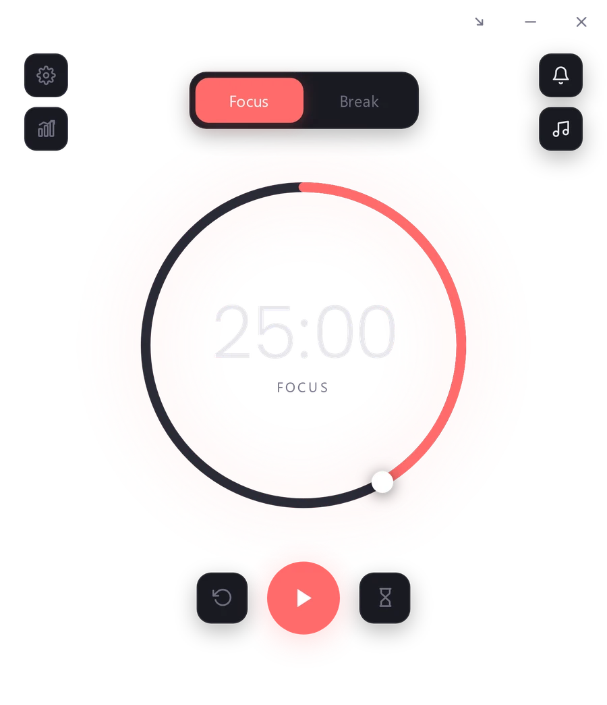
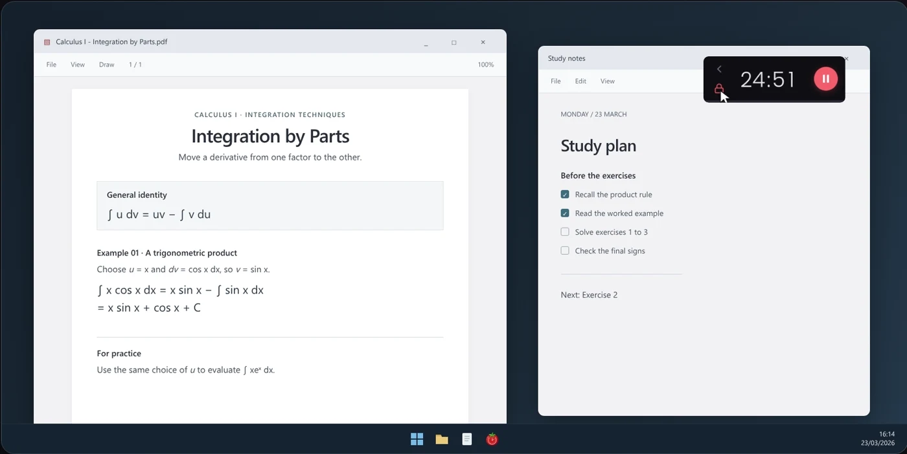

Acompanha o teu tempo de foco.
Vê quanto tempo dedicaste ao foco por semana, mês e ano. Se quiseres sincronizar o progresso entre PCs, podes usar a tua conta Google.

Um temporizador Pomodoro para Windows, com sessões ao teu ritmo, sons ambiente e um Mini Mode que fica sempre à vista.
Grátis para Windows 10 e 11 (64 bits)


Mini Mode
Reduz a app a uma janela flutuante. O tempo e os controlos ficam por cima das tuas notas, do PDF ou de qualquer outra janela.

Vê quanto tempo dedicaste ao foco por semana, mês e ano. Se quiseres sincronizar o progresso entre PCs, podes usar a tua conta Google.
Escolhe entre nove sons ambiente, da chuva ao ruído castanho. Há seis alarmes e o volume de cada função é independente.

Ajusta o tempo de foco e pausa, ativa tempo extra e guarda as tuas cores em temas claros ou escuros.